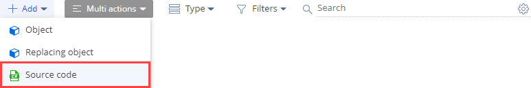
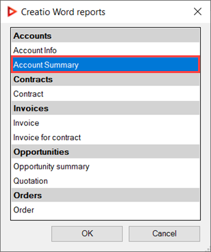

1. Создать отчет
- Перейдите в дизайнер системы по кнопке
 . В блоке Настройка системы (System setup) перейдите по ссылке Настройка отчетов (Report setup).
. В блоке Настройка системы (System setup) перейдите по ссылке Настройка отчетов (Report setup). -
Выполните действие Добавить отчет —>MS Word (New report —>MS Word).
-
На панели свойств заполните свойства отчета:
- Название отчета (Report name) — "Информация контрагента" ("Account Summary").
- Раздел (Section) — выберите "Контрагенты" ("Accounts").
- Установите признак Отображать на странице записи (Show in the section record page).
Для применения изменений свойств нажмите Применить (Apply).
2. Реализовать пользовательские макросы
Макросы, которые необходимо реализовать:
- Макрос для получения дополнительной информации контрагента, которая зависит от его типа.
- Макрос для получения даты формирования отчета.
- Макрос для получения имени сотрудника, который сформировал отчет.
1. Реализовать макрос (дополнительная информация контрагента)
- Перейдите в раздел Конфигурация (Configuration) и выберите пользовательский пакет, в который будет добавлена схема.
-
На панели инструментов реестра раздела нажмите Добавить —> Исходный код (Add —> Source code).
 -
В дизайнере исходного кода заполните свойства схемы:
- Код (Code) — "UsrAccountInfoByTypeConverter".
- Заголовок (Title) — "AccountInfoByTypeConverter".
Для применения изменений свойств нажмите Применить (Apply).
-
Добавьте локализуемую строку, которая содержит тип Клиент (Customer) контрагента.
- В контекстном меню узла Локализуемые строки (Localizable strings) нажмите кнопку
/scr_add_button.png) .
. -
Заполните свойства локализуемой строки:
- Код (Code) — "CustomerAdditional".
- Значение (Value) — "Годовой оборот {0}" ("Annual turnover {0}").
- Для добавления локализуемой строки нажмите Добавить (Add).
- В контекстном меню узла Локализуемые строки (Localizable strings) нажмите кнопку
-
Добавьте локализуемую строку, которая содержит тип Партнер (Partnet) контрагента.
- В контекстном меню узла Локализуемые строки (Localizable strings) нажмите кнопку .
-
Заполните свойства локализуемой строки:
- Код (Code) — "PartnerAdditional".
- Значение (Value) — "Количество сотрудников {0} чел." ("Number of employees {0} persons").
- Для добавления локализуемой строки нажмите Добавить (Add).
- В контекстном меню узла Локализуемые строки (Localizable strings) нажмите кнопку
-
В дизайнере исходного кода реализуйте класс макроса для получения дополнительной информации контрагента, которая зависит от его типа.
Исходный код схемы типа Исходный код (Source code) представлен ниже.
- На панели инструментов дизайнера исходного кода нажмите Опубликовать (Publish) для выполнения изменений на уровне базы данных.
2. Реализовать макрос (дата формирования отчета)
- Перейдите в раздел Конфигурация (Configuration) и выберите пользовательский пакет, в который будет добавлена схема.
-
На панели инструментов реестра раздела нажмите Добавить —> Исходный код (Add —> Source code).
-
В дизайнере исходного кода заполните свойства схемы:
- Код (Code) — "UsrCurrentDateConverter".
- Заголовок (Title) — "CurrentDateConverter".
Для применения изменений свойств нажмите Применить (Apply).
-
В дизайнере исходного кода реализуйте класс макроса для получения даты формирования отчета.
Исходный код схемы типа Исходный код (Source code) представлен ниже.
- На панели инструментов дизайнера исходного кода нажмите Опубликовать (Publish) для выполнения изменений на уровне базы данных.
3. Реализовать макрос (имя сотрудника, который сформировал отчет)
- Перейдите в раздел Конфигурация (Configuration) и выберите пользовательский пакет, в который будет добавлена схема.
-
На панели инструментов реестра раздела нажмите Добавить —> Исходный код (Add —> Source code).
-
В дизайнере исходного кода заполните свойства схемы:
- Код (Code) — "UsrCurrentUserConverter".
- Заголовок (Title) — "CurrentUserConverter".
Для применения изменений свойств нажмите Применить (Apply).
-
В дизайнере исходного кода реализуйте класс макроса для получения имени сотрудника, который сформировал отчет.
Исходный код схемы типа Исходный код (Source code) представлен ниже.
- На панели инструментов дизайнера исходного кода нажмите Опубликовать (Publish) для выполнения изменений на уровне базы данных.
3. Настроить поля отчета
- В блоке Настройте поля отчета (Set up report data) рабочей области страницы настройки отчета нажмите
 .
. -
В выпадающем списке Колонка (Column) выберите колонку Id.
- Нажмите Выбрать (Select). Далее к этой колонке необходимо добавить тег пользовательского макроса для получения даты формирования отчета.
-
Аналогично добавьте колонки Id (далее к этой колонке необходимо добавить тег пользовательского макроса для получения имени сотрудника, который сформировал отчет), Название (Name), Тип (Type), Основной контакт (Primary contact), Id (далее к этой колонке необходимо добавить тег пользовательского макроса для получения дополнительной информации контрагента, которая зависит от его типа).
В результате в отчет добавлены поля, которые представлены на рисунке ниже.
-
К колонке Id добавьте тег пользовательского макроса для получения даты формирования отчета.
-
Откройте страницу настройки колонки Id.
Способы открытия страницы настройки колонки:
- В блоке Настройте поля отчета (Set up report data) рабочей области страницы настройки отчета дважды кликните по колонке, к которой необходимо добавить тег макроса.
- В блоке Настройте поля отчета (Set up report data) рабочей области страницы настройки отчета в строке колонки, к которой необходимо добавить тег макроса, нажмите
 .
.
-
Измените значение поля Заголовок (Title) на "Id[#CurrentDate#]". [#CurrentDate#] — тег пользовательского макроса, который позволяет получить дату формирования отчета.

- На панели инструментов страницы настройки колонки нажмите Сохранить (Save).
- Аналогично к другим колонкам Id добавьте тег [#CurrentUser#] пользовательского макроса для получения имени сотрудника, который сформировал отчет, и тег [#AccountInfoByType#] пользовательского макроса для получения дополнительной информации контрагента, которая зависит от его типа.
В результате в отчет добавлены поля, которые представлены на рисунке ниже.
-
- На панели инструментов страницы настройки отчета нажмите Применить (Apply).
4. Настроить шаблон отчета
- Запустите приложение MS Word.
-
На вкладке плагина Creatio панели инструментов нажмите кнопку Connect.
-
Введите логин и пароль пользователя в Creatio.
-
Подключите сервер приложения Creatio.
- Возле поля Server нажмите
 .
. -
В окне Available Servers нажмите New.
-
Заполните свойства сервера:
- Name — пользовательское имя сервера.
- Link — адрес сервера приложения Creatio, в котором выполнялась настройка отчета.
- В окне Server Connection Setup нажмите OK для сохранения параметров подключения сервера Creatio.
- В окне Available Servers выберите сервер приложения Creatio, в котором выполнялась настройка отчета (опционально), и нажмите OK.
- Возле поля Server нажмите
- В окне Login нажмите OK для подключения к выбранному серверу Creatio.
-
Выберите отчет MS Word, который планируется настроить.
-
На вкладке плагина Creatio панели инструментов нажмите кнопку Select report.
-
В окне Creatio Word reports выберите отчет Информация контрагента (Account Info).
 - В окне Creatio Word reports нажмите OK для выбора отчета.
В результате открыта панель Word report data отчета Информация контрагента (Account Info), который представлен на рисунке ниже.
-
-
Настройте шаблон отчета. Для этого воспользуйтесь инструкцией, которая приведена в статье Настроить отчет в плагине Word и загрузить в Creatio.
Настроенный шаблон отчета Информация контрагента (Account Summary) приведен на рисунке ниже.
-
Загрузите настроенный шаблон отчета Информация контрагента (Account Summary) в Creatio. Для этого на вкладке плагина Creatio панели инструментов нажмите кнопку Save to Creatio.
В результате настроенный шаблон отчета Информация контрагента (Account Summary) загружен в Creatio и отображается на панели свойств.
Результат выполнения примера
Чтобы посмотреть результат выполнения примера:
- Обновите страницу раздела Контрагенты (Accounts).
- Откройте страницу контрагента.
В результате выполнения примера на страницу контрагента добавлен отчет Информация контрагента (Account Summary). Отчет доступен в выпадающем меню кнопки Печать (Print) панели инструментов раздела.
Отчет Информация контрагента (Account Summary) для контрагента типа Клиент (Customer) имеет вид, который представлен на рисунке ниже.
Отчет Информация контрагента (Account Summary) для контрагента типа Партнер (Partner) имеет вид, который представлен на рисунке ниже.